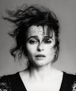
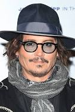
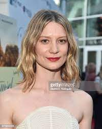
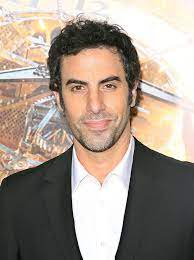

Anne Hathaway Rainha Branca. Anne Jacqueline Hathaway é uma atriz norte-americana. Recebedora de vários prêmios, incluindo um Oscar e um Globo de Ouro. Ela nasceu em 12 de novembro de 1982 no Brooklyn, Nova Iorque, Nova York, EUA,tendo atualmente com 40 anos.

Helena Bonham Carter Rainha de Copas. Helena Bonham Carter, é uma atriz britânica. Ela já recebeu diversos prêmios ao longo de sua carreira, incluindo um BAFTA de melhor atriz coadjuvante. Ela nasceu em 26 de maio de 1966 em Islington, Londres, Reino Unido,tendo atualment 57 anos.

Johnny Depp Chapeleiro Maluco. John Christopher Depp II é um ator, músico, produtor de cinema e diretor norte-americano três vezes indicado ao Oscar de Melhor Ator e vencedor de um Globo de Ouro. Ele nasceu em 9 de junho de 1963 em Owensboro, Kentucky, EUA, tendo atualmente 59 anos.

Mia Wasikowska Alicie. Mia Wasikowska é uma atriz australiana, de ascendência polonesa. Ela ganhou reconhecimento mundial em 2010 depois de estrelar como Alice em Alice no País das Maravilhas de Tim Burton. Ela nasceu em 25 de outubro de 1989 em Camberra, Austrália, tendo atualmente 33 anos.

Sacha Baron Cohen O Tempo. Sacha Noam Baron Cohen é um ator, roteirista, produtor e comediante britânico. Seus principais personagens são Borat, Ali G, Brüno e Almirante General Aladeen Ele nasceu em 13 de outubro de 1971 em Hammersmith, Londres, Reino Unido, e tendo atualmente 51 anos.
-topo da pagína.-